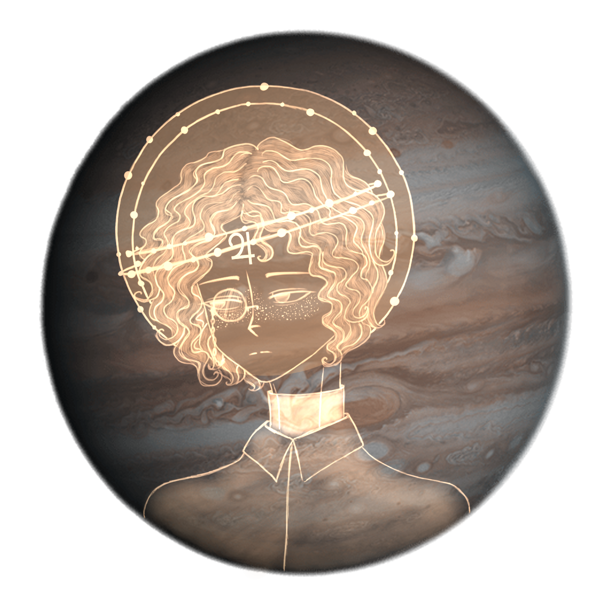
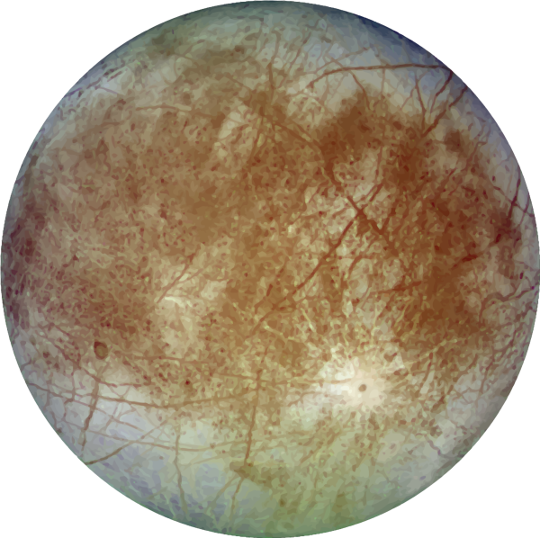
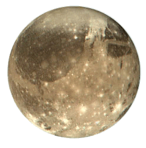
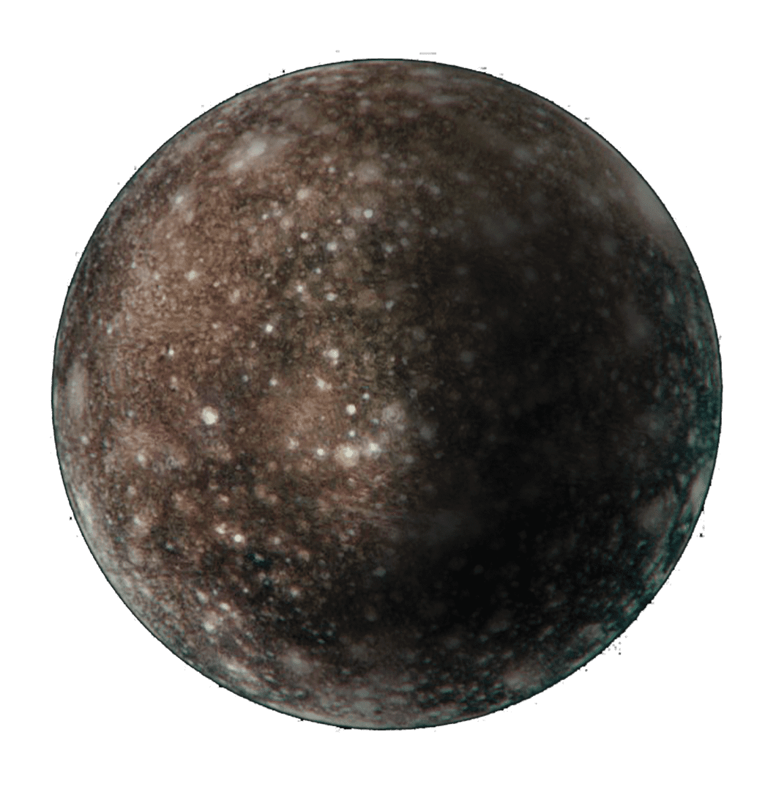

Пятая по удалённости планета
Газовый гигант - Юпитер
Юпи́тер — Планета была известна людям с глубокой древности, что нашло своё отражение в мифологии и религиозных верованиях различных культур: месопотамской, вавилонской, греческой и других. Современное название Юпитера происходит от имени древнеримского верховного бога-громовержца. Ряд атмосферных явлений на Юпитере — штормы, молнии, полярные сияния, — имеет масштабы, на порядки превосходящие земные. Примечательным образованием в атмосфере является Большое красное пятно — гигантский шторм, известный с XIX (а возможно, и с XVII) века. Юпитер имеет, по крайней мере, 95 спутников.


Ио
И́ó — спутник Юпитера, самый близкий к планете из четырёх галилеевых спутников. Назван в честь мифологической Ио — жрицы Геры и возлюбленной Зевса.

Европа
Евро́па, или Юпитер II — шестой по отдалённости от планеты спутник Юпитера, наименьший из четырёх галилеевых спутников. По размерам немного уступает Луне.

Ганимед
Ганиме́д — один из галилеевых спутников Юпитера, седьмой по расстоянию от него среди всех его спутников и крупнейший спутник в Солнечной системе. Ядро богатое железом.

Каллисто
Калли́сто — второй по размеру спутник Юпитера, один из четырёх галилеевых спутников и самый удалённый среди них от планеты. Является третьим по величине спутником в Солнечной системе.